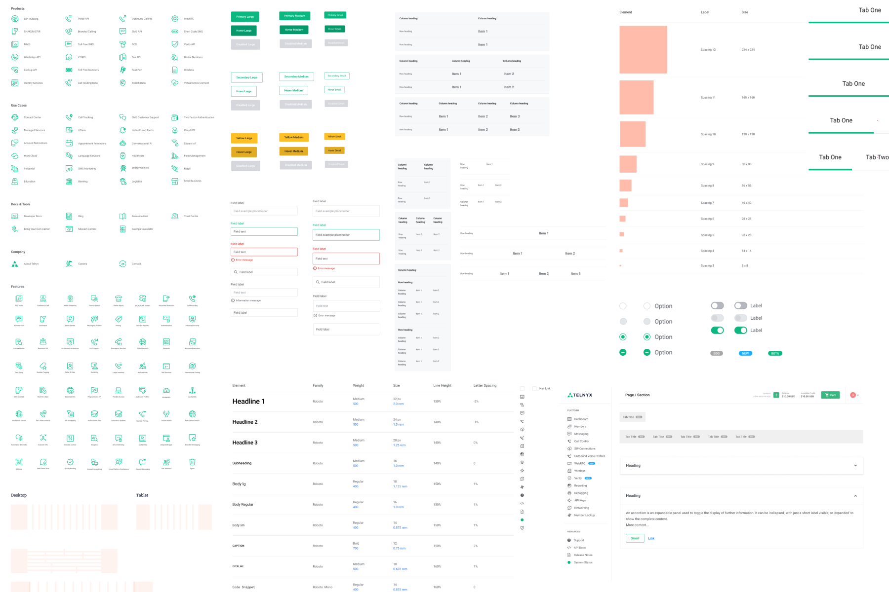

Interconnect Component Library
The foundations and building blocks of Telnyx's products.

About Telnyx
Telnyx is a global communications platform and carrier-grade network powering secure, high-quality voice calls, messaging, wireless, numbering, fax, and more.
Context
As Telnyx's product offering grew, the need for a unified design system became evident. The Interconnect Component Library was created to ensure consistency across all products while improving development efficiency and user experience.
My role
As the lead designer for the Interconnect library, I was responsible for:
- Establishing design foundations and principles
- Creating and documenting reusable components
- Collaborating with engineering on implementation
- Ensuring accessibility standards were met
- Managing the component library in Figma